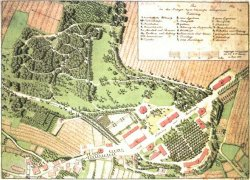

Separate Development in Schaumburg after 1647—Grafschaft Schaumburg, Hessian Portion
 Plan von den Anlagen beim Nenndorfer Schwefelbade
von F. Schüler, 1807
In the theory of imperial law, the Grafschaft Schaumburg continued. In practice, both parts of the country now went their separate ways. The south-eastern part of Hesse with the seat of government in the town of Rinteln, which was developed into a fortress since 1665, was linked to the Landgraviate (from 1803 Electorate) Hessen-Kassel in personal union (until 1821), but was legally independent; Last but not least, the Schaumburg estates watched over this, holding their state parliaments in Rodenberg and, since 1651, in Rinteln. This situation was changed when the political landscape was reorganized in the upheavals of the beginning of the 19th century: The Hessian part of the Grafschaft Schaumburg with Rinteln was mediatized in 1821 and placed under the government in Kassel as "Landkreis Grafschaft Schaumburg". When Hesse fell to Prussia in 1866, the "Kreis Rinteln" (so named 1866-1904) also became Prussian. It was subordinated to the Province of Hessen-Nassau until it was incorporated into the Province of Hanover (also Prussian since 1866) as part of the administrative reform of 1932. The church administration followed suit, so that this part of Schaumburg belongs to the Evangelical Lutheran Regional Church of Hanover.von F. Schüler, 1807
In 1667 the Hessians began their mercantilist peuplication policy, which continued into the 18th century. Supported by the landgrave's government, today's Hessendorf, the Liekwegen miners' settlement and the colonies of Friedrichsburg, Friedrichswald, Friedrichshöhe and Friedrichshagen were built. Saline and Gesundbrunnen in Rodenberg were generously funded before Landgrave Wilhelm IX. In 1787 a bathhouse was built in Nenndorf near the sulfur springs. In stream valleys such as Exten, Rolfshagen, Bernsen or Krückeberg, pre-industrial iron hammers were built that produced considerable quantities of knives and other hardware. Since the beginning of the 19th century, glass manufacture has also developed into a flourishing industry: the "Schauenstein" (Heye) glassworks began operations; soon the "Neuhütte" and "Hermannshütte" (Stoevesandt) joined them; Basket makers earned their living as suppliers working from home. The sandstone quarries and coal mines took off again. Linen weaving increased its production under industrial conditions. Tobacco factories, brickworks and distilleries were added. However, the mining and glass industry with its center in Obernkirchen became the lead industry in an otherwise still agricultural environment. Brick factories and distilleries were added. However, the mining and glass industry with its center in Obernkirchen became the lead industry in an otherwise still agricultural environment. Brick factories and distilleries were added. However, the mining and glass industry with its center in Obernkirchen became the lead industry in an otherwise still agricultural environment.
Road construction did not keep up with the rapid development of industry; One had to wait a few decades for a railway connection (Hildesheim-Löhne 1875; Rinteln-Stadthagen 1900; Hameln-Haste 1904; Extertalbahn 1929). Despite economic hardship and political reaction, the Schaumburgers remained calm to cool in 1831 and 1848; however, many young people sought their salvation in emigration, which reached its peak in the 1950s. It is probably not without good reason that the Hessian exclave Grafschaft Schaumburg felt - viewed as a whole - rather neglected by the headquarters in Kassel.